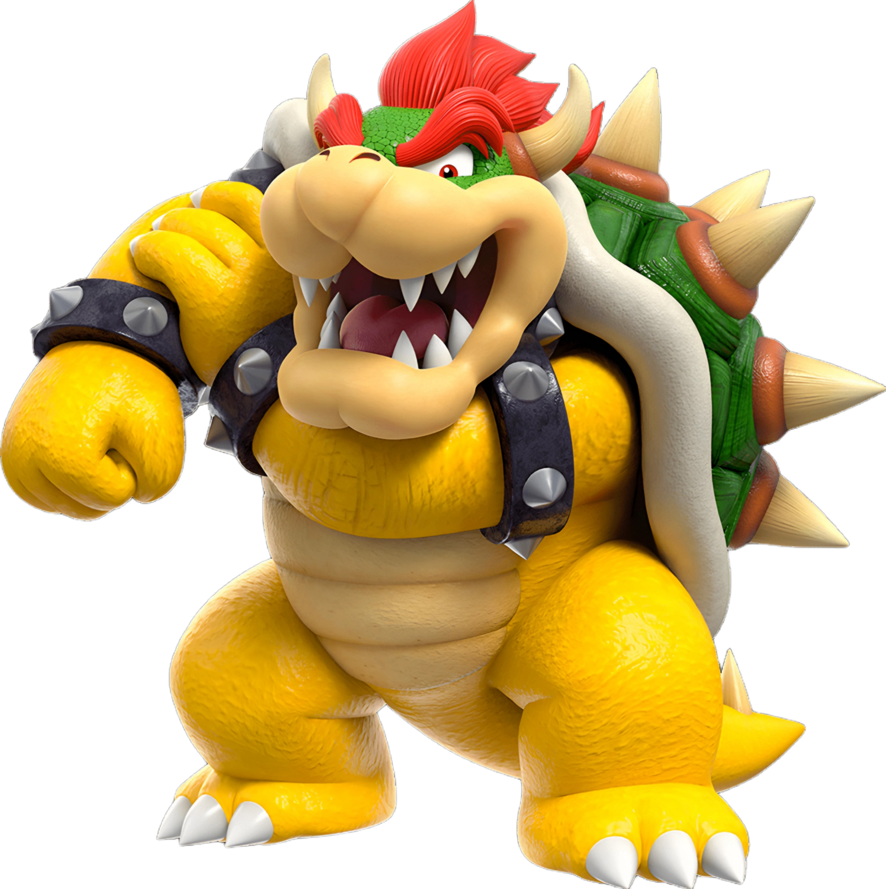
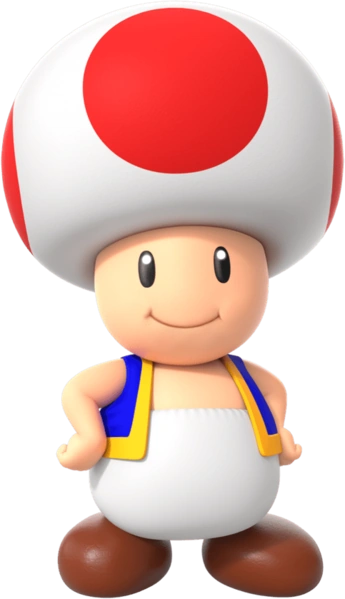
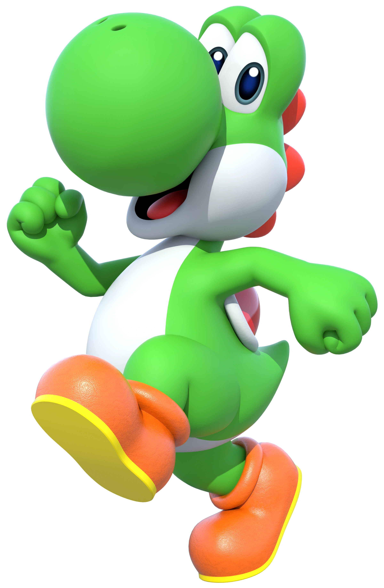

|
Mario is a character created by the Japanese game designer Shigeru Miyamoto. He is the star of the Mario franchise, a recurring character in the Donkey Kong franchise, and the mascot of the Japanese video game company Nintendo.
|
 |
Princess Peach is a character in Nintendo's Mario franchise. She was created by Shigeru Miyamoto and introduced in the 1985 original Super Mario Bros. game as Princess Toadstool. She is the princess regnant and head of state of the Mushroom Kingdom, where she resides in her castle along with Toads. |
|  |
Bowser is the King of the Koopas, anthropomorphic turtles that inhabit the world of the Mushroom Kingdom. Bowser differs greatly from the rest of the Koopa clan, which consists mainly of bipedal tortoises. |
 |
Toad, known in Japan as Kinopio, is a character created by Japanese video game designer Shigeru Miyamoto for Nintendo's Mario franchise. A prominent red Toad serves as one of Princess Peach's handlers and appears consistently as a supporting character in the franchise. |
 |
Yoshi is a fictional dinosaur who appears in video games published by Nintendo. Yoshi debuted in Super Mario World on the SNES as Mario and Luigi's sidekick. Throughout the mainline Super Mario series, Yoshi typically serves as Mario's trusted steed. |